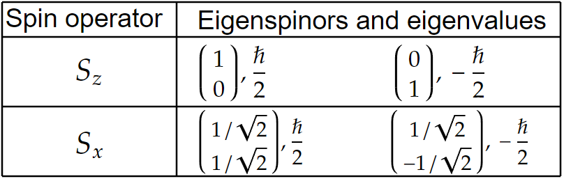
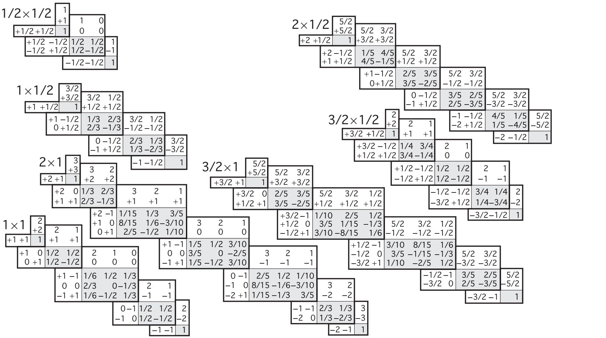
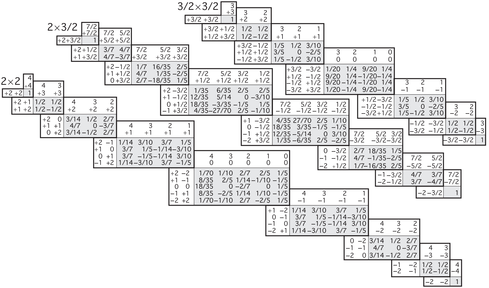

Below is a collection of formulas and key ideas for a second upper level course in quantum mechanics.
Basics.
Orbital Angular Momentum.
Spin Angular Momentum.
Addition of Angular Momentum.
Path Integrals.
Concepts from probability (in the context of QM):
\begin{align*} \text{Expectation value (average) of $O $} \;\; \langle \hat{O} \rangle &= \langle \psi |\hat{O}|\psi \rangle \\ \text{Variance} \;\; \sigma _O ^2 &= \langle \hat{O}^2 \rangle -\langle \hat{O} \rangle ^2 \\ \text{Standard deviation} \;\; \sigma _O &= \sqrt{\langle \hat{O}^2 \rangle -\langle \hat{O} \rangle ^2 } \end{align*}Basic QM operators:
\begin{align*} \text{Position} \;\; \hat{x} &= x \\ \text{Momentum} \;\; \hat{p_x} &= -i\hbar \frac{\partial }{\partial x} \end{align*}Uncertainty principle:
\[\sigma ^2 _A\sigma _B^2 \geq \left( \frac{1}{2i}\langle \left[ \hat{A},\hat{B} \right] \rangle \right) ^2 \]Operators of compatible observables commute. They share simulatenous eigenstates.
Classical definition of angular momentum:
\begin{align*} \mathbf{L} &= \mathbf{r}\times \mathbf{p} \\ L_x &= yp_z-zp_y \tag{And cyclic substitutions} \end{align*}Commutation relations for rotational angular momentum operators:
\[ \left[ L_x,L_y \right] =i\hbar L_z \tag{And cylic permutations} \]Quantitative description of their incompatibility as observables:
\[\sigma _{L_x}\sigma _{L_y}\geq \frac{\hbar }{2}|\langle L_z \rangle | \]Square of the total angular momentum:
\[L^2 \equiv L_x^2 +L_y^2 +L_z^2 \]$L^2 $ and $L_i $ are compatible observables.
Ladder operators
\begin{align*} L_{\pm} &\equiv L_x \pm iL_y \\ \left[ L_z,L_{\pm} \right] &= \pm \hbar L_{\pm}\\ \left[ L^2 ,L_{\pm} \right] &= 0 \end{align*}If $L_zf=\mu f $, then
\[L_z(L_{\pm }f)= (\mu \pm \hbar )(L_{\pm}f) \](i.e., $L_{\pm} $ can create an eigenfunction given one, with eigenvalue offset by $\pm \hbar $).
Let $f_{\text{top} } $ be the top function ($L_+ f_{\text{top} }=0 $).
\begin{align*} \text{Let} \;\;L_z f_{\text{top} } &= \hbar lf_{\text{top} } \\ \text{then} \;\; L^2 f_{\text{top} } &= \hbar ^2 l(l+1)f_{\text{top} } \end{align*}Let $f_{\text{bottom} } $ be the bottom function ($L_-f_{\text{bottom} }=0 $).
\begin{align*} \text{Let} \;\;L_zf_{\text{bottom} } &= \hbar l' f_{\text{bottom} } \\ \text{then} \;\; L^2 f_{\text{bottom} } &= \hbar ^2 l'(l'-1) \end{align*}Takeaway:
\[l'=-l \]Orbital angular momentum eigenfunctions
$f_{l}^{m} $ defines an eigenfunction for both $L^2 $ and $L_z $:
\begin{align*} L^2 f^{m}_l &= \hbar ^2 l(l+1)f^{m}_l \\ L_zf^{m}_l &= \hbar mf_{l}^{m} \end{align*}Where
\[f^{m}_l = Y^{m}_l(\theta ,\phi ) \tag{Spherical Harmonics}\]And
\begin{align*} l &= 0,1/2,1,3/2,\cdots \\ m &= -l,-l+1,\cdots ,l-1,l \tag{$2l+1 $ options for each $l $} \end{align*}Ladder operator effects on $f^{m}_l $:
\begin{align*} L_+f^{m}_l &= \hbar \sqrt{(l-m)(l+m+1)}\; f^{m\color{red}+1\color{black}}_l \\ L_-f^{m}_l &= \hbar \sqrt{(l+m)(l-m+1)}\; f^{m\color{red}-1\color{black}}_l \end{align*}Classical definition:
\[\mathbf{S}=I\boldsymbol{\omega} \]Commutation relations
\[ \left[ S_x,S_y \right] =i\hbar S_z\tag{And cyclic permutations} \]A spin eigenstate has a definite $s $ and $m $ value.
\begin{align*} s &= 0,\frac{1}{2},1,\frac{3}{2},2,\cdots \\ m &= -s,-s+1,\cdots ,s-1,s \end{align*}Such that they form eigenvectors of $S^2 $ and $S_z $:
\begin{align*} S^2 | s\;m \rangle &= \hbar ^2 s(s+1)| s\;m \rangle \\ S_z| s\;m \rangle &= \hbar m| s\;m \rangle \end{align*}Ladder operators:
\[S_{\pm}| s\;m \rangle =\hbar \sqrt{s(s+1)-m(m\pm 1)}\;| s\;(m\pm 1) \rangle \]$s $ is said to be immutable. It is a characteristic value for a given particle. It is fixed.
Spin 1/2
With $s=1/2 $, $m=-1/2 $ or $1/2 $. They form a basis for spinors:
\begin{align*} \chi _+ &= \begin{pmatrix} 1 \\ 0 \\ \end{pmatrix} \\ \chi _- &= \begin{pmatrix} 0 \\ 1 \\ \end{pmatrix} \end{align*}General spinor in the above basis:
\begin{align*} \chi &= \begin{pmatrix} a \\ b \\ \end{pmatrix} \\ &= a\chi _++b\chi _- \end{align*}The three spin operators ($\mathbf{S}=(S_x,S_y,S_z) $) are
\[\mathbf{S}=\frac{\hbar }{2}\boldsymbol{\sigma } \]Where the Pauli spin matrices are ($\boldsymbol{\sigma } =(\sigma _x,\sigma _y,\sigma _z)$):
\begin{align*} \sigma _x &= \begin{pmatrix} 0 & 1 \\ 1 & 0 \\ \end{pmatrix} \\ \sigma _y &= \begin{pmatrix} 0 & -i \\ i & 0 \\ \end{pmatrix} \\ \sigma _z &= \begin{pmatrix} 1 & 0 \\ 0 & -1 \\ \end{pmatrix} \end{align*}Further,
\begin{align*} S^2 &= \frac{3}{4}\hbar ^2 \begin{pmatrix} 1 & 0 \\ 0 & 1 \\ \end{pmatrix} \\ S_+ &= \hbar \begin{pmatrix} 0 & 1 \\ 0 & 0 \\ \end{pmatrix} \\ S_- &= \hbar \begin{pmatrix} 0 & 0 \\ 1 & 0 \\ \end{pmatrix} \end{align*}In the $\left\lbrace \chi _+,\chi _- \right\rbrace $ basis,
In the same basis, the probabilities of measuring $\pm \hbar /2 $ from $S_x $ given $\begin{pmatrix} a \\ b \\ \end{pmatrix} $ are:
\[P_{S_x} \left( \pm \frac{\hbar }{2} \right) = \frac{1}{2}|a\pm b|^2 \]Spin 1
In the $S_z $ basis, we have the three basis states
\[\chi _+=\begin{pmatrix} 1 \\ 0 \\ 0 \\ \end{pmatrix} ,\;\;\; \chi _0 = \begin{pmatrix} 0 \\ 1 \\ 0 \\ \end{pmatrix} ,\;\;\; \chi _- = \begin{pmatrix} 0 \\ 0 \\ 1 \\ \end{pmatrix} \]Spin matrices:
\begin{align*} S_x &= \frac{\hbar }{\sqrt{2}}\begin{pmatrix} 0 & 1 & 0 \\ 1 & 0 & 1 \\ 0 & 1 & 0 \\ \end{pmatrix} \\ S_y &= i\frac{\hbar }{\sqrt{2}}\begin{pmatrix} 0 & -1 & 0 \\ 1 & 0 & -1 \\ 0 & 1 & 0 \\ \end{pmatrix} \\ S_z &= \hbar \begin{pmatrix} 1 & 0 & 0 \\ 0 & 0 & 0 \\ 0 & 0 & -1 \\ \end{pmatrix} \end{align*}Ladder spin 1 matrices:
\begin{align*} S_+ &= \sqrt{2}\hbar \begin{pmatrix} 0 & 1 & 0 \\ 0 & 0 & 1 \\ 0 & 0 & 0 \\ \end{pmatrix} \\ S_- &= \sqrt{2}\hbar \begin{pmatrix} 0 & 0 & 0 \\ 1 & 0 & 0 \\ 0 & 1 & 0 \\ \end{pmatrix} \end{align*}Note that these relations hold:
\begin{align*} S_x &= \frac{S_++S_-}{2} \\ S_y &= \frac{S_+-S_-}{2i} \end{align*}Given two particles (for concreteness, the following formulas are in terms of spin angular momentum), $| s_1 \;m_1 \rangle $ and $| s_2 \;m_2 \rangle $, there exist composite states
\[| s'\;m' \rangle \equiv| s_1 \;s_2 \;m_1 \;m_2 \rangle \]Where $m' $ is uniquely determined:
\[m'=m_1 +m_2 \]While $s' $ can take one of many values:
\[s' = (s_1 +s_2 ),\;(s_1 +s_2 -1),\;(s_1 +s_2 -2),\;\cdots ,\;|s_1 -s_2 | \] Clebsch-Gordan coefficientsGiven a combined (coupled) state $| s\;m \rangle $, we can decompose it as a linear combination of composite states:
\[| s\;m \rangle =\sum_{m_1 +m_2 =m}^{} C^{s_1 s_2 s}_{m_1 m_2 m}| s_1 \;s_2 \;m_1 \;m_2 \rangle \]  Source: Particle Data Group.